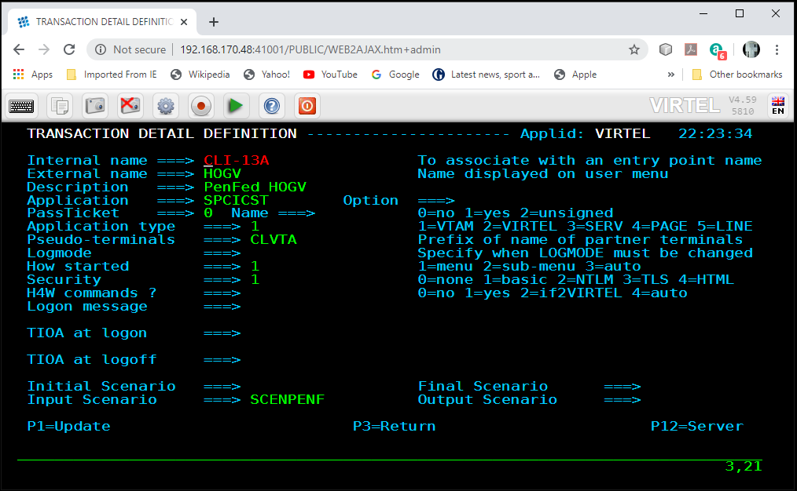
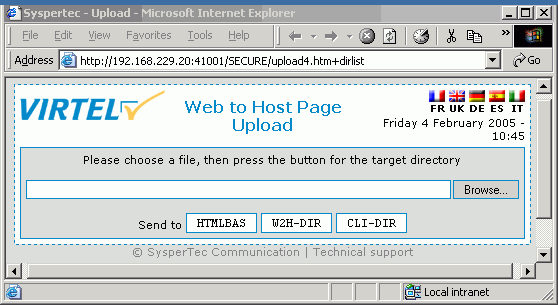

Security Enhancements¶
Introduction¶
Virtel V4.61 introduces some new security enhancements. The HTML Security Type 4 now supports a LOCK option whereby the terminal will ‘lock up’ after a defined inactivity period and users will have to logon to release their session. A new HTML security type, Type 5, has also been introduced which reduces calls to the security subsystem (RACF, ACF, TopSecret). After initially obtaining the users security context information, the information is transferred through the various stages of session initiation. For example, with Application Management software, such as TPX, users are often requested to provide logon details at the Virtel Level, the TPX level and the application level. With Type 5 security this is no longer the case. Users only provide security information at the Virtel stage.
Type 4 security LOCK option¶
Transactions defined with HTML security type 4 extract security context information (Userid and Password) though a Virtel HTML page. Note that the new Lock option is only supported with HTML security (Type 4) and not the Basic security (Type 1) as provided by the browser. The following newsletter summaries the new features and maintenance updates that can be found in Virtel Release 4.61 @ update level 6023.

Fig 1 - HTML security Type 4 Signon
The LOCK option can be used with Virtel’s customizable application menu (cAppMenu) and the standard VIRTEL Web Access template (web2ajax.htm).To use the LOCK feature the following parameters, need to be set.
Entry Point definitions¶
Administrator Entry Point¶
The Administrator Entry point should not have the LOCK set as not all Administration tools support the lock feature.
User Entry Point¶
To activate the feature for all user transactions under a User Entry Point the Virtel administrator should specify LOCK=1, either in the VIRCONFIG control statements for the Entry point or through the online Administration panels. By default, the LOCK feature is not enabled i.e., LOCK=0.

Fig 2 - User Entry Point example with the LOCK feature enabled
Transaction definition¶
Transactions defined under an Entry point with the LOCK feature set should only use Security types 0, 4 or 5. Security type=0 should be used for transactions which will not be subject to the LOCK feature. Do not use any other security types (1,2 or 3) as this can cause problems with various browsers as they do not support the full functionally that HTTP standard officially requires. HTML Security Type 5 should be used where you want to minimize calls to the mainframe security manager.
Fig 2a - Transaction definition with Security Type 4
HTML Security Type 4 with LOCK Example¶
Virtel transaction¶
A Virtel transaction, TSOP, has been defined under an Entry Point which has LOCK set. The security assigned to the transaction is TYPE=4. When the user/browser opens the URL to access the TSOP the HTML signon screen is presented.
Fig 3 - Standard logon through HTML
The credentials are entered and the user is taken to the TSO sign on screen.

Fig 4. TSO logon
Again, the credentials are entered, and the users is logged on to TSO.

Fig 5 - ISPF Display
After a period of inactivity, as defined in the TCT, the LOCK signon screen will appear: -

Fig 6 - LOCK Sign on screen
Entering the security information will take me back to the application.
HTML Security Type 5¶
The new HTML Security type 5 allows a user to signon without repeatedly connecting to the security manager subsystem (e.g. RACF) once they have connected with a valid userid/password and generated a valid VirtelUserSignon code. The VirtelUserSigon code is used as a security context within Virtel thereby bypassing the need to having to revalidate security information at different stages of the session setup. A VirtelUserSignon code may be reused until it is invalidated. A code will be invalidated when the connection is terminated, or the Virtel is restarted. As an example, HTML security Type 5 can be used in with the alternative Customizable Application Menu, known as cAppMenu
Example of using HTML Security Type 5 with cAppMenu and the LOCK feature.¶
The LOCK facility can be employed in Virtel’s Customizable Application Menu, known as cAppMenu. cAppMenu is an alternative to the Virtel’s default application list (AppList).

Fig 7 - Virtel Default Application Applist Menu

Fig 8 - Virtel’s Customizable Application Menu - cAppMenu
Defining a Transaction to use HTML Security Type 5¶
The transaction definition screen now has the option to define a transaction as security Type 5

Fig 9 - HTML Security Type 5 transaction
Scenario enhancements¶
VirtelUserSignoff= and X-UserSignonCode parameters
In addition to the VirtelUserSignon= parm, the {{{ USER-SIGNON-CODE }}} may now be specified after the “X-USerSignonCode” header and after the “VirtelUSerSignoff=” parameter. The “X-UserSignonCode” header can be used in lieu of the VirtelUserSignon= parameter, but has lower priority (the parm must not be set for the header to be considered). The “VirtelUSerSignoff parameter’s intended use is to allow a SIGNOFF button to be present in the URL menu page. Pressing this button is the normal way for a user to invalidate his current VirtelUserSignon= parms.
For further information on how to set up cAppMenu and integrate it with the LOCK option see the Virtel Technical Newsletter – zOS TN 2023-02 Installing the Customizable Application Menu.